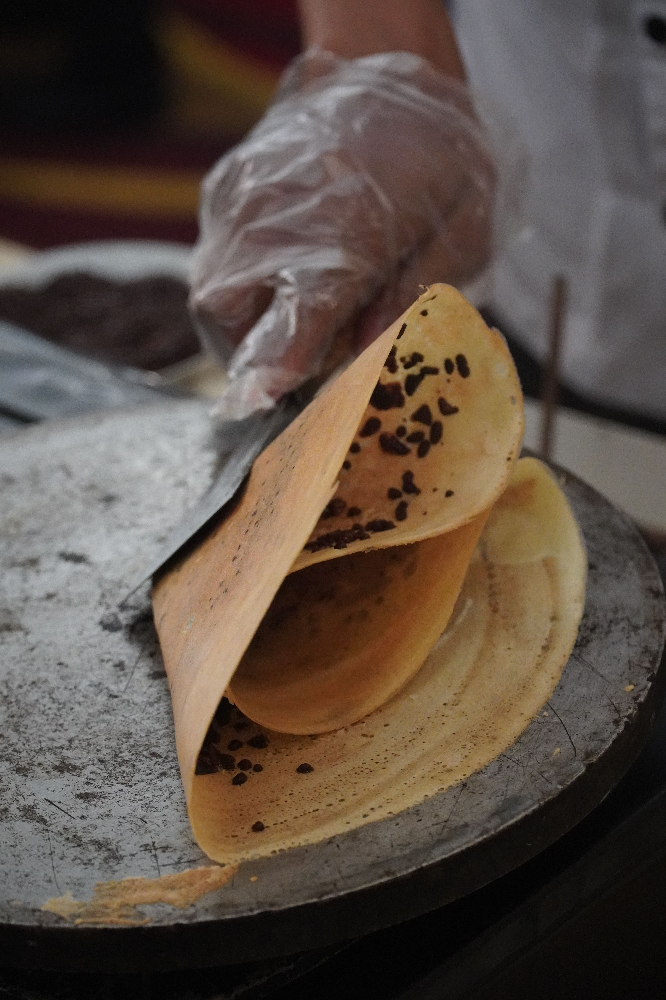

Apam Balik

About the dish
Apam balik is a folded pancake you find at night markets and roadside stalls. Balik means to turn over, and the cook folds it in half once it's cooked. Nobody is sure where it started, because Malay and Chinese communities both make pancakes like it.
The middle is soft and chewy, and the edges go thin and crispy. Inside are crushed peanuts and sugar. It tastes sweet and nutty.
The stall cooks it fresh on a hot round pan, folds it and cuts it into pieces.
Fun fact: Some stalls sell a thick, fluffy kind and a thin, crispy kind, so you can pick the one you like.
Ingredients
- Flour and sugar
- Coconut milk
- Yeast
- Crushed peanuts
- Sweet corn and butter (optional)